Load libraries.
install via install.packages("name")
library(car)
Loading required package: carData
library(caret)
Loading required package: ggplot2
Loading required package: lattice
library(cowplot) library(curl)
Using libcurl 8.7.1 with LibreSSL/3.3.6
library(CVXR)
Attaching package: ‘CVXR’
The following object is masked from ‘package:stats’:
power
library(foreign) library(geofacet) library(glmnet)
Loading required package: Matrix
Loaded glmnet 4.1-8
library(haven) library(janitor)
Attaching package: ‘janitor’
The following objects are masked from ‘package:stats’:
chisq.test, fisher.test
library(kableExtra) library(maps) library(mlr3) library(randomForest)
randomForest 4.7-1.2
Type rfNews() to see new features/changes/bug fixes.
Attaching package: ‘randomForest’
The following object is masked from ‘package:ggplot2’:
margin
library(ranger)
Attaching package: ‘ranger’
The following object is masked from ‘package:randomForest’:
importance
library(RColorBrewer) library(rstan)
Loading required package: StanHeaders
rstan version 2.32.6 (Stan version 2.32.2)
For execution on a local, multicore CPU with excess RAM we recommend calling
options(mc.cores = parallel::detectCores()).
To avoid recompilation of unchanged Stan programs, we recommend calling
rstan_options(auto_write = TRUE)
For within-chain threading using reduce_sum() or map_rect() Stan functions,
change threads_per_chain option:
rstan_options(threads_per_chain = 1)
library(scales) library(sf)
Linking to GEOS 3.11.0, GDAL 3.5.3, PROJ 9.1.0; sf_use_s2() is TRUE
library(shinystan)
Loading required package: shiny
This is shinystan version 2.6.0
library(tidyverse)
── Attaching core tidyverse packages ──────────────────────── tidyverse 2.0.0 ──
✔ dplyr 1.1.4 ✔ readr 2.1.5
✔ forcats 1.0.0 ✔ stringr 1.5.1
✔ lubridate 1.9.3 ✔ tibble 3.2.1
✔ purrr 1.0.2 ✔ tidyr 1.3.1
── Conflicts ────────────────────────────────────────── tidyverse_conflicts() ──
✖ readr::col_factor() masks scales::col_factor()
✖ dplyr::combine() masks randomForest::combine()
✖ purrr::discard() masks scales::discard()
✖ tidyr::expand() masks Matrix::expand()
✖ tidyr::extract() masks rstan::extract()
✖ dplyr::filter() masks stats::filter()
✖ dplyr::group_rows() masks kableExtra::group_rows()
✖ dplyr::id() masks CVXR::id()
✖ purrr::is_vector() masks CVXR::is_vector()
✖ dplyr::lag() masks stats::lag()
✖ purrr::lift() masks caret::lift()
✖ purrr::map() masks maps::map()
✖ randomForest::margin() masks ggplot2::margin()
✖ tidyr::pack() masks Matrix::pack()
✖ readr::parse_date() masks curl::parse_date()
✖ dplyr::recode() masks car::recode()
✖ purrr::some() masks car::some()
✖ lubridate::stamp() masks cowplot::stamp()
✖ tidyr::unpack() masks Matrix::unpack()
ℹ Use the conflicted package (http://conflicted.r-lib.org/) to force all conflicts to become errors
library(viridis)
Loading required package: viridisLite
Attaching package: ‘viridis’
The following object is masked from ‘package:scales’:
viridis_pal
The following object is masked from ‘package:maps’:
unemp
set working directory here
setwd("~")
####———————————————————-#
Read, merge, and process data.
####———————————————————-#
Read popular vote datasets.
d_popvote <- read_csv(“popvote_1948_2020.csv”)
Rows: 40 Columns: 11
── Column specification ────────────────────────────────────────────────────────
Delimiter: “,”
chr (2): party, candidate
dbl (5): year, pv, pv2p, deminc, juneapp
lgl (4): winner, incumbent, incumbent_party, prev_admin
ℹ Use spec() to retrieve the full column specification for this data.
ℹ Specify the column types or set show_col_types = FALSE to quiet this message.
d_state_popvote <- read_csv(“state_popvote_1948_2020.csv”)
Rows: 959 Columns: 16
── Column specification ────────────────────────────────────────────────────────
Delimiter: “,”
chr (2): state, winner
dbl (14): year, D_pv, R_pv, D_pv2p, R_pv2p, D_pv_lag1, R_pv_lag1, D_pv2p_lag…
ℹ Use spec() to retrieve the full column specification for this data.
ℹ Specify the column types or set show_col_types = FALSE to quiet this message.
Read elector distribution dataset.
d_ec <- read_csv(“corrected_ec_1948_2024.csv”)
Rows: 1010 Columns: 4
── Column specification ────────────────────────────────────────────────────────
Delimiter: “,”
chr (2): state, stateab
dbl (2): year, electors
ℹ Use spec() to retrieve the full column specification for this data.
ℹ Specify the column types or set show_col_types = FALSE to quiet this message.
Read ads datasets.
ad_campaigns <- read_csv(“ad_campaigns_2000-2012.csv”)
Rows: 166078 Columns: 10
── Column specification ────────────────────────────────────────────────────────
Delimiter: “,”
chr (4): party, sponsor, state, creative
dbl (5): n_markets, n_stations, total_cost, after_primary, cycle
date (1): air_date
ℹ Use spec() to retrieve the full column specification for this data.
ℹ Specify the column types or set show_col_types = FALSE to quiet this message.
ad_creative <- read_csv(“ad_creative_2000-2012.csv”)
Rows: 8857 Columns: 6
── Column specification ────────────────────────────────────────────────────────
Delimiter: “,”
chr (5): creative, party, ad_issue, ad_purpose, ad_tone
dbl (1): cycle
ℹ Use spec() to retrieve the full column specification for this data.
ℹ Specify the column types or set show_col_types = FALSE to quiet this message.
ads_2020 <- read_csv(“ads_2020.csv”)
Rows: 96 Columns: 7
── Column specification ────────────────────────────────────────────────────────
Delimiter: “,”
chr (1): state
dbl (4): biden_airings, trump_airings, total_airings, total_cost
date (2): period_startdate, period_enddate
ℹ Use spec() to retrieve the full column specification for this data.
ℹ Specify the column types or set show_col_types = FALSE to quiet this message.
facebook_ads_2020 <- read_csv(“facebook_ads_2020.csv”)
Rows: 2304323 Columns: 7
── Column specification ────────────────────────────────────────────────────────
Delimiter: “,”
chr (3): pd_id, page_name, disclaimer
dbl (2): new_spend, num_of_new_ads
date (2): from_date, to_date
ℹ Use spec() to retrieve the full column specification for this data.
ℹ Specify the column types or set show_col_types = FALSE to quiet this message.
facebook_ads_biden_2020 <- read_csv(“facebook_ads_biden_2020.csv”)
New names:
Rows: 984 Columns: 8
── Column specification
──────────────────────────────────────────────────────── Delimiter: “,” chr
(3): pd_id, page_name, disclaimer dbl (3): …1, new_spend, num_of_new_ads date
(2): from_date, to_date
ℹ Use spec() to retrieve the full column specification for this data. ℹ
Specify the column types or set show_col_types = FALSE to quiet this message.
• `` -> ...1
campaign_spending <- read_csv(“FEC_contributions_by_state_2008_2024.csv”)
New names:
Rows: 510 Columns: 6
── Column specification
──────────────────────────────────────────────────────── Delimiter: “,” chr
(3): candidate_id, contribution_state, party dbl (3): …1,
contribution_receipt_amount, election_year
ℹ Use spec() to retrieve the full column specification for this data. ℹ
Specify the column types or set show_col_types = FALSE to quiet this message.
• `` -> ...1
Read polling data.
d_polls <- read_csv(“national_polls_1968-2024.csv”)
Rows: 7420 Columns: 9
── Column specification ────────────────────────────────────────────────────────
Delimiter: “,”
chr (3): state, party, candidate
dbl (4): year, weeks_left, days_left, poll_support
lgl (1): before_convention
date (1): poll_date
ℹ Use spec() to retrieve the full column specification for this data.
ℹ Specify the column types or set show_col_types = FALSE to quiet this message.
d_state_polls <- read_csv(“state_polls_1968-2024.csv”)
Rows: 205342 Columns: 9
── Column specification ────────────────────────────────────────────────────────
Delimiter: “,”
chr (3): state, party, candidate
dbl (4): year, weeks_left, days_left, poll_support
lgl (1): before_convention
date (1): poll_date
ℹ Use spec() to retrieve the full column specification for this data.
ℹ Specify the column types or set show_col_types = FALSE to quiet this message.
Read turnout data.
d_turnout <- read_csv(“state_turnout_1980_2022.csv”)
Rows: 1144 Columns: 15
── Column specification ────────────────────────────────────────────────────────
Delimiter: “,”
chr (5): state, vep_turnout, vep_highest_office, vap_highest_office, noncitizen
dbl (1): year
num (9): total_ballots, highest_office_ballots, vep, vap, prison, probation,…
ℹ Use spec() to retrieve the full column specification for this data.
ℹ Specify the column types or set show_col_types = FALSE to quiet this message.
####————————————————————–#
Descriptive statistics on ads and campaign spending over time.
####————————————————————–#
Tone and Political Ads.
ad_campaigns |> left_join(ad_creative) |> group_by(cycle, party) |> mutate(tot_n=n()) |> ungroup() |> group_by(cycle, party, ad_tone) |> summarise(pct=n()*100/first(tot_n)) |> filter(!is.na(ad_tone)) |> ggplot(aes(x = cycle, y = pct, fill = ad_tone, group = party)) + geom_bar(stat = “identity”) + scale_x_continuous(breaks = seq(2000, 2012, 4)) + ggtitle(“Campaign Ads Aired By Tone”) + scale_fill_manual(values = c(“red”,“orange”,“gray”,“darkgreen”,“white”), name = “tone”) + xlab("") + ylab("%") + facet_wrap(~ party) + theme_minimal() + theme(axis.title = element_text(size=20), axis.text = element_text(size=15), strip.text.x = element_text(size = 20))
Joining with by = join_by(party, creative, cycle)
Warning in left_join(ad_campaigns, ad_creative): Detected an unexpected many-to-many relationship between x and y.
ℹ Row 1 of x matches multiple rows in y.
ℹ Row 102 of y matches multiple rows in x.
ℹ If a many-to-many relationship is expected, set `relationship =
“many-to-many”` to silence this warning.
summarise() has grouped output by ‘cycle’, ‘party’. You can override using
the .groups argument.
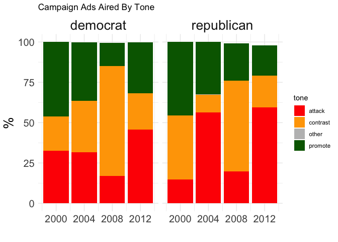
The Purpose of Political Ads
ad_campaigns |> left_join(ad_creative) |> group_by(cycle, party) |> mutate(tot_n=n()) |> ungroup() |> group_by(cycle, party, ad_purpose) |> summarise(pct=n()*100/first(tot_n)) |> filter(!is.na(ad_purpose)) |> bind_rows( ##2016 raw data not public yet! This was entered manually data.frame(cycle = 2016, ad_purpose = “personal”, party = “democrat”, pct = 67), data.frame(cycle = 2016, ad_purpose = “policy”, party = “democrat”, pct = 12), data.frame(cycle = 2016, ad_purpose = “both”, party = “democrat”, pct = 21), data.frame(cycle = 2016, ad_purpose = “personal”, party = “republican”, pct = 11), data.frame(cycle = 2016, ad_purpose = “policy”, party = “republican”, pct = 71), data.frame(cycle = 2016, ad_purpose = “both”, party = “republican”, pct = 18) ) |> ggplot(aes(x = cycle, y = pct, fill = ad_purpose, group = party)) + geom_bar(stat = “identity”) + scale_x_continuous(breaks = seq(2000, 2016, 4)) +
ggtitle(“Campaign Ads Aired By Purpose”) +
scale_fill_manual(values = c(“grey”,“red”,“darkgreen”,“black”,“white”), name = “purpose”) + xlab("") + ylab("%") + facet_wrap(~ party) + theme_minimal() + theme(axis.title = element_text(size=20), axis.text = element_text(size=15), strip.text.x = element_text(size = 20))
Joining with by = join_by(party, creative, cycle)
Warning in left_join(ad_campaigns, ad_creative): Detected an unexpected many-to-many relationship between x and y.
ℹ Row 1 of x matches multiple rows in y.
ℹ Row 102 of y matches multiple rows in x.
ℹ If a many-to-many relationship is expected, set `relationship =
“many-to-many”` to silence this warning.
summarise() has grouped output by ‘cycle’, ‘party’. You can override using
the .groups argument.
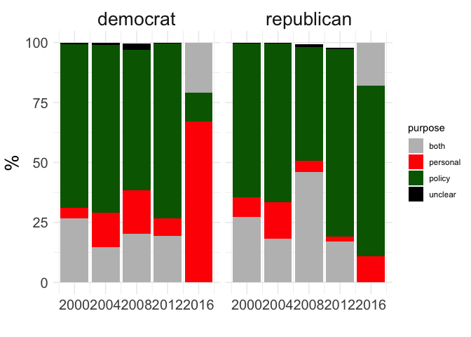
The Elections and Their Issues
top_issues <- ad_campaigns |> left_join(ad_creative) |> filter(!grepl(“None|Other”, ad_issue)) |> group_by(cycle, ad_issue) |> summarise(n=n()) |> top_n(5, n)
Joining with by = join_by(party, creative, cycle)
Warning in left_join(ad_campaigns, ad_creative): Detected an unexpected many-to-many relationship between x and y.
ℹ Row 1 of x matches multiple rows in y.
ℹ Row 102 of y matches multiple rows in x.
ℹ If a many-to-many relationship is expected, set `relationship =
“many-to-many”` to silence this warning.
summarise() has grouped output by ‘cycle’. You can override using the
.groups argument.
making each plot in a grid to have its own x-axis (issue name)
is tricky with facet_wrap, so we use this package cowplot
which allows us to take a list of separate plots and grid them together
plist <- lapply(c(2000,2004,2008,2012), function(c) { top_issues |> filter(cycle == c) |> ggplot(aes(x = reorder(ad_issue, n), y = n)) + geom_bar(stat = “identity”) + coord_flip() + theme_bw() + xlab("") + ylab(“number ads aired”) + ggtitle(paste(“Top 5 Ad\nIssues in”,c))
}) cowplot::plot_grid(plotlist = plist, nrow = 2, ncol = 2, align = “hv”)
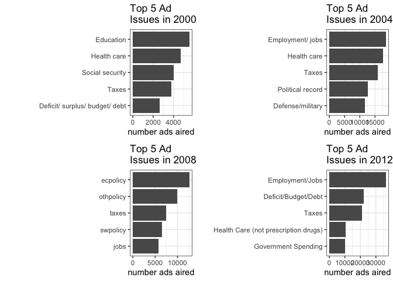
Campaign Ads Aired By Issue and Party: 2000
party_issues2000 <- ad_campaigns |> filter(cycle == 2000) |> left_join(ad_creative) |> filter(ad_issue != “None”) |>
this group_by is to get our denominator
group_by(ad_issue) |> mutate(tot_n=n()) |> ungroup() |>
this one is get numerator and calculate % by party
group_by(ad_issue, party) |> summarise(p_n=n()*100/first(tot_n)) |> ungroup() |>
finally, this one so we can sort the issue names
by D% of issue ad-share instead of alphabetically
group_by(ad_issue) |> mutate(Dp_n = ifelse(first(party) == “democrat”, first(p_n), 0))
Joining with by = join_by(party, creative, cycle)
Warning in left_join(filter(ad_campaigns, cycle == 2000), ad_creative): Detected an unexpected many-to-many relationship between x and y.
ℹ Row 1 of x matches multiple rows in y.
ℹ Row 102 of y matches multiple rows in x.
ℹ If a many-to-many relationship is expected, set `relationship =
“many-to-many”` to silence this warning.
summarise() has grouped output by ‘ad_issue’. You can override using the
.groups argument.
ggplot(party_issues2000, aes(x = reorder(ad_issue, Dp_n), y = p_n, fill = party)) + geom_bar(stat = “identity”) + scale_fill_manual(values = c(“blue”, “red”)) + ylab("% of ads on topic from each party") + xlab(“issue”) +
ggtitle(“Campaign Ads Aired by Topic in 2000”) +
coord_flip() + theme_bw()
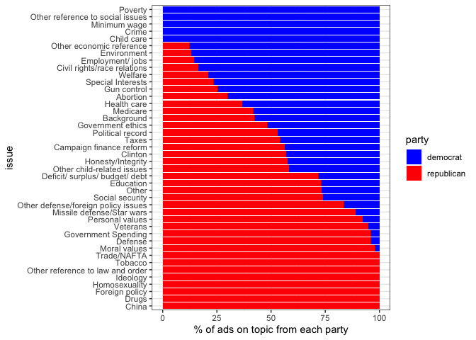
Campaign Ads Aired By Issue and Party: 2012
party_issues2012 <- ad_campaigns |> filter(cycle == 2012) |> left_join(ad_creative) |> filter(ad_issue != “None”) |> group_by(cycle, ad_issue) |> mutate(tot_n=n()) |> ungroup() |> group_by(cycle, ad_issue, party) |> summarise(p_n=n()*100/first(tot_n)) |> ungroup() |> group_by(cycle, ad_issue) |> mutate(Dp_n = ifelse(first(party) == “democrat”, first(p_n), 0))
Joining with by = join_by(party, creative, cycle)
Warning in left_join(filter(ad_campaigns, cycle == 2012), ad_creative): Detected an unexpected many-to-many relationship between x and y.
ℹ Row 7 of x matches multiple rows in y.
ℹ Row 8259 of y matches multiple rows in x.
ℹ If a many-to-many relationship is expected, set `relationship =
“many-to-many”` to silence this warning.
summarise() has grouped output by ‘cycle’, ‘ad_issue’. You can override using
the .groups argument.
ggplot(party_issues2012, aes(x = reorder(ad_issue, Dp_n), y = p_n, fill = party)) + geom_bar(stat = “identity”) + scale_fill_manual(values = c(“blue”, “red”)) + ylab("% of ads on topic from each party") + xlab(“issue”) +
ggtitle(“Campaign Ads Aired by Topic in 2012”) +
coord_flip() + theme_bw()
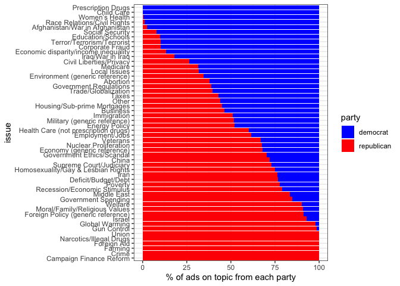
When to Buy Ads?
ad_campaigns |> mutate(year = as.numeric(substr(air_date, 1, 4))) |> mutate(month = as.numeric(substr(air_date, 6, 7))) |> filter(year %in% c(2000, 2004, 2008, 2012), month > 7) |> group_by(cycle, air_date, party) |> summarise(total_cost = sum(total_cost)) |> ggplot(aes(x=air_date, y=total_cost, color=party)) +
scale_x_date(date_labels = “%b, %Y”) +
scale_y_continuous(labels = dollar_format()) + scale_color_manual(values = c(“blue”,“red”), name = “”) + geom_line() + geom_point(size=0.5) + facet_wrap(cycle ~ ., scales=“free”) + xlab("") + ylab(“ad spend”) + theme_bw() + theme(axis.title = element_text(size=20), axis.text = element_text(size=11), strip.text.x = element_text(size = 20))
summarise() has grouped output by ‘cycle’, ‘air_date’. You can override using
the .groups argument.
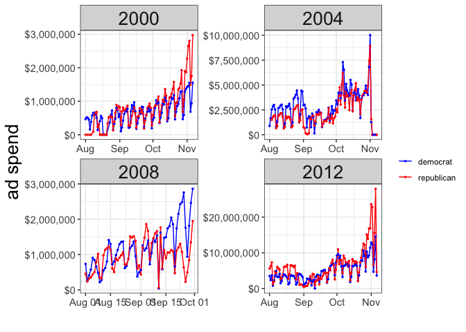
Tone in Political Ads
ad_campaigns |> left_join(ad_creative) |> filter(ad_tone %in% c(“attack”, “promote”)) |> mutate(year = as.numeric(substr(air_date, 1, 4))) |> mutate(month = as.numeric(substr(air_date, 6, 7))) |> filter(year %in% c(2000, 2004, 2008, 2012), month > 7) |> group_by(cycle, air_date, ad_tone) |> summarise(total_cost = sum(n_stations)) |> group_by(cycle, air_date) |> mutate(total_cost = total_cost/sum(total_cost)) |> ungroup() |> ggplot(aes(x=air_date, y=total_cost, fill=ad_tone, color=ad_tone)) +
scale_x_date(date_labels = “%b”) +
scale_fill_manual(values = c(“purple”,“green”), name = “ad tone”) + scale_color_manual(values = c(“purple”,“green”), name = “ad tone”) + geom_bar(stat = “identity”) + facet_wrap(cycle ~ ., scales=“free”) + xlab("") + ylab("% of ads bought on day") + theme_bw() + theme(axis.title = element_text(size=20), axis.text = element_text(size=10), strip.text.x = element_text(size = 20))
Joining with by = join_by(party, creative, cycle)
Warning in left_join(ad_campaigns, ad_creative): Detected an unexpected many-to-many relationship between x and y.
ℹ Row 1 of x matches multiple rows in y.
ℹ Row 102 of y matches multiple rows in x.
ℹ If a many-to-many relationship is expected, set `relationship =
“many-to-many”` to silence this warning.
summarise() has grouped output by ‘cycle’, ‘air_date’. You can override using
the .groups argument.
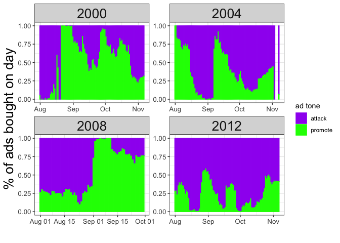
The State-level Air War in 2008 (Obama vs. McCain)
ad_campaigns |> mutate(year = as.numeric(substr(air_date, 1, 4))) |> mutate(month = as.numeric(substr(air_date, 6, 7))) |> mutate(state = state.name[match(state, state.abb)]) |> filter(cycle == 2008) |> left_join(d_state_popvote |> filter(year == 2008) |> select(-year), by=“state”) |> mutate(winner=ifelse(D_pv2p > R_pv2p, “democrat”, “republican”)) |> group_by(cycle, state, air_date, party, winner) |> summarise(total_cost = sum(total_cost)) |> filter(!is.na(state)) |>
ggplot(aes(x=air_date, y=log(total_cost+1), color=party)) +
ggplot(aes(x=party, y=total_cost, fill=party)) + geom_bar(stat=“identity”) + geom_rect(aes(fill=winner), xmin=-Inf, xmax=Inf, ymin=46.310^6, ymax=5210^6) + facet_geo(~ state, scales=“free_x”) + scale_fill_manual(values = c(“blue”, “red”)) + scale_y_continuous(labels = unit_format(unit = “M”, scale = 1e-6)) + xlab("") + ylab(“ad spend”) + theme_bw() + theme(axis.title.x=element_blank(), axis.text.x=element_blank(), axis.ticks.x=element_blank())
summarise() has grouped output by ‘cycle’, ‘state’, ‘air_date’, ‘party’. You
can override using the .groups argument.
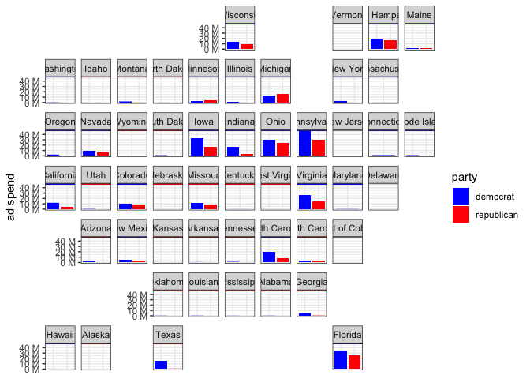
Visualizing Facebook ads and Biden Facebook ads in 2020.
d_facebook <- facebook_ads_2020 |> rename(date = from_date, new_ads = num_of_new_ads) |> group_by(date) |> summarize(new_spend = sum(new_spend, na.rm = T), new_ads = sum(new_ads, na.rm = T))
d_facebook |> ggplot(aes(x = date, y = new_ads)) + geom_line() + geom_smooth(method = “lm”, se = TRUE) + labs(x = “Date”, y = “New Facebook Ads”) + theme_minimal()
geom_smooth() using formula = ‘y ~ x’
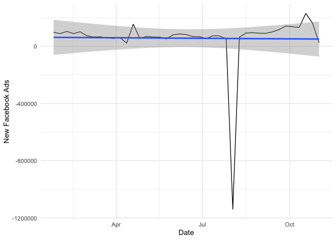
d_facebook |> ggplot(aes(x = date, y = new_spend)) + geom_line() + scale_y_continuous(labels = dollar_format()) + geom_smooth(method = “lm”, se = TRUE) + labs(x = “Date”, y = “New Facebook Ad Spending”) + theme_minimal()
geom_smooth() using formula = ‘y ~ x’
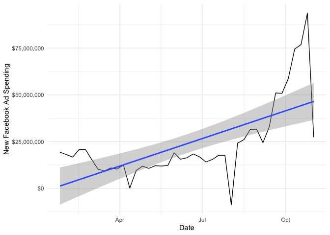
d_facebook_biden <- facebook_ads_biden_2020 |> rename(date = from_date, new_ads = num_of_new_ads) |> group_by(date) |> summarize(new_spend = sum(new_spend, na.rm = T), new_ads = sum(new_ads, na.rm = T))
d_facebook_biden |> ggplot(aes(x = date, y = new_ads)) + geom_line() + geom_smooth(method = “lm”, se = TRUE) + labs(x = “Date”, y = “New Facebook Ads (Biden Only)”) + theme_minimal()
geom_smooth() using formula = ‘y ~ x’
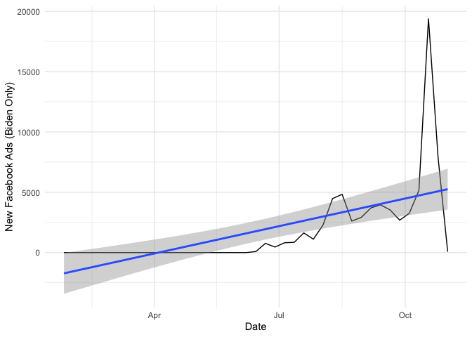
d_facebook_biden |> ggplot(aes(x = date, y = new_spend)) + geom_line() + scale_y_continuous(labels = dollar_format()) + geom_smooth(method = “lm”, se = TRUE) + labs(x = “Date”, y = “New Facebook Ad Spending (Biden Only)”)
geom_smooth() using formula = ‘y ~ x’
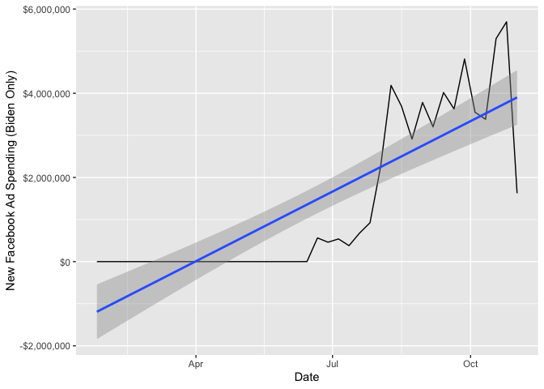
theme_minimal()
List of 136
$ line :List of 6
..$ colour : chr “black”
..$ linewidth : num 0.5
..$ linetype : num 1
..$ lineend : chr “butt”
..$ arrow : logi FALSE
..$ inherit.blank: logi TRUE
..- attr(*, “class”)= chr [1:2] “element_line” “element”
$ rect :List of 5
..$ fill : chr “white”
..$ colour : chr “black”
..$ linewidth : num 0.5
..$ linetype : num 1
..$ inherit.blank: logi TRUE
..- attr(*, “class”)= chr [1:2] “element_rect” “element”
$ text :List of 11
..$ family : chr ""
..$ face : chr “plain”
..$ colour : chr “black”
..$ size : num 11
..$ hjust : num 0.5
..$ vjust : num 0.5
..$ angle : num 0
..$ lineheight : num 0.9
..$ margin : ‘margin’ num [1:4] 0points 0points 0points 0points
.. ..- attr(*, “unit”)= int 8
..$ debug : logi FALSE
..$ inherit.blank: logi TRUE
..- attr(*, “class”)= chr [1:2] “element_text” “element”
$ title : NULL
$ aspect.ratio : NULL
$ axis.title : NULL
$ axis.title.x :List of 11
..$ family : NULL
..$ face : NULL
..$ colour : NULL
..$ size : NULL
..$ hjust : NULL
..$ vjust : num 1
..$ angle : NULL
..$ lineheight : NULL
..$ margin : ‘margin’ num [1:4] 2.75points 0points 0points 0points
.. ..- attr(*, “unit”)= int 8
..$ debug : NULL
..$ inherit.blank: logi TRUE
..- attr(*, “class”)= chr [1:2] “element_text” “element”
$ axis.title.x.top :List of 11
..$ family : NULL
..$ face : NULL
..$ colour : NULL
..$ size : NULL
..$ hjust : NULL
..$ vjust : num 0
..$ angle : NULL
..$ lineheight : NULL
..$ margin : ‘margin’ num [1:4] 0points 0points 2.75points 0points
.. ..- attr(*, “unit”)= int 8
..$ debug : NULL
..$ inherit.blank: logi TRUE
..- attr(*, “class”)= chr [1:2] “element_text” “element”
$ axis.title.x.bottom : NULL
$ axis.title.y :List of 11
..$ family : NULL
..$ face : NULL
..$ colour : NULL
..$ size : NULL
..$ hjust : NULL
..$ vjust : num 1
..$ angle : num 90
..$ lineheight : NULL
..$ margin : ‘margin’ num [1:4] 0points 2.75points 0points 0points
.. ..- attr(*, “unit”)= int 8
..$ debug : NULL
..$ inherit.blank: logi TRUE
..- attr(*, “class”)= chr [1:2] “element_text” “element”
$ axis.title.y.left : NULL
$ axis.title.y.right :List of 11
..$ family : NULL
..$ face : NULL
..$ colour : NULL
..$ size : NULL
..$ hjust : NULL
..$ vjust : num 1
..$ angle : num -90
..$ lineheight : NULL
..$ margin : ‘margin’ num [1:4] 0points 0points 0points 2.75points
.. ..- attr(*, “unit”)= int 8
..$ debug : NULL
..$ inherit.blank: logi TRUE
..- attr(*, “class”)= chr [1:2] “element_text” “element”
$ axis.text :List of 11
..$ family : NULL
..$ face : NULL
..$ colour : chr “grey30”
..$ size : ‘rel’ num 0.8
..$ hjust : NULL
..$ vjust : NULL
..$ angle : NULL
..$ lineheight : NULL
..$ margin : NULL
..$ debug : NULL
..$ inherit.blank: logi TRUE
..- attr(*, “class”)= chr [1:2] “element_text” “element”
$ axis.text.x :List of 11
..$ family : NULL
..$ face : NULL
..$ colour : NULL
..$ size : NULL
..$ hjust : NULL
..$ vjust : num 1
..$ angle : NULL
..$ lineheight : NULL
..$ margin : ‘margin’ num [1:4] 2.2points 0points 0points 0points
.. ..- attr(*, “unit”)= int 8
..$ debug : NULL
..$ inherit.blank: logi TRUE
..- attr(*, “class”)= chr [1:2] “element_text” “element”
$ axis.text.x.top :List of 11
..$ family : NULL
..$ face : NULL
..$ colour : NULL
..$ size : NULL
..$ hjust : NULL
..$ vjust : num 0
..$ angle : NULL
..$ lineheight : NULL
..$ margin : ‘margin’ num [1:4] 0points 0points 2.2points 0points
.. ..- attr(*, “unit”)= int 8
..$ debug : NULL
..$ inherit.blank: logi TRUE
..- attr(*, “class”)= chr [1:2] “element_text” “element”
$ axis.text.x.bottom : NULL
$ axis.text.y :List of 11
..$ family : NULL
..$ face : NULL
..$ colour : NULL
..$ size : NULL
..$ hjust : num 1
..$ vjust : NULL
..$ angle : NULL
..$ lineheight : NULL
..$ margin : ‘margin’ num [1:4] 0points 2.2points 0points 0points
.. ..- attr(*, “unit”)= int 8
..$ debug : NULL
..$ inherit.blank: logi TRUE
..- attr(*, “class”)= chr [1:2] “element_text” “element”
$ axis.text.y.left : NULL
$ axis.text.y.right :List of 11
..$ family : NULL
..$ face : NULL
..$ colour : NULL
..$ size : NULL
..$ hjust : num 0
..$ vjust : NULL
..$ angle : NULL
..$ lineheight : NULL
..$ margin : ‘margin’ num [1:4] 0points 0points 0points 2.2points
.. ..- attr(*, “unit”)= int 8
..$ debug : NULL
..$ inherit.blank: logi TRUE
..- attr(*, “class”)= chr [1:2] “element_text” “element”
$ axis.text.theta : NULL
$ axis.text.r :List of 11
..$ family : NULL
..$ face : NULL
..$ colour : NULL
..$ size : NULL
..$ hjust : num 0.5
..$ vjust : NULL
..$ angle : NULL
..$ lineheight : NULL
..$ margin : ‘margin’ num [1:4] 0points 2.2points 0points 2.2points
.. ..- attr(*, “unit”)= int 8
..$ debug : NULL
..$ inherit.blank: logi TRUE
..- attr(*, “class”)= chr [1:2] “element_text” “element”
$ axis.ticks : list()
..- attr(*, “class”)= chr [1:2] “element_blank” “element”
$ axis.ticks.x : NULL
$ axis.ticks.x.top : NULL
$ axis.ticks.x.bottom : NULL
$ axis.ticks.y : NULL
$ axis.ticks.y.left : NULL
$ axis.ticks.y.right : NULL
$ axis.ticks.theta : NULL
$ axis.ticks.r : NULL
$ axis.minor.ticks.x.top : NULL
$ axis.minor.ticks.x.bottom : NULL
$ axis.minor.ticks.y.left : NULL
$ axis.minor.ticks.y.right : NULL
$ axis.minor.ticks.theta : NULL
$ axis.minor.ticks.r : NULL
$ axis.ticks.length : ‘simpleUnit’ num 2.75points
..- attr(*, “unit”)= int 8
$ axis.ticks.length.x : NULL
$ axis.ticks.length.x.top : NULL
$ axis.ticks.length.x.bottom : NULL
$ axis.ticks.length.y : NULL
$ axis.ticks.length.y.left : NULL
$ axis.ticks.length.y.right : NULL
$ axis.ticks.length.theta : NULL
$ axis.ticks.length.r : NULL
$ axis.minor.ticks.length : ‘rel’ num 0.75
$ axis.minor.ticks.length.x : NULL
$ axis.minor.ticks.length.x.top : NULL
$ axis.minor.ticks.length.x.bottom: NULL
$ axis.minor.ticks.length.y : NULL
$ axis.minor.ticks.length.y.left : NULL
$ axis.minor.ticks.length.y.right : NULL
$ axis.minor.ticks.length.theta : NULL
$ axis.minor.ticks.length.r : NULL
$ axis.line : list()
..- attr(*, “class”)= chr [1:2] “element_blank” “element”
$ axis.line.x : NULL
$ axis.line.x.top : NULL
$ axis.line.x.bottom : NULL
$ axis.line.y : NULL
$ axis.line.y.left : NULL
$ axis.line.y.right : NULL
$ axis.line.theta : NULL
$ axis.line.r : NULL
$ legend.background : list()
..- attr(*, “class”)= chr [1:2] “element_blank” “element”
$ legend.margin : ‘margin’ num [1:4] 5.5points 5.5points 5.5points 5.5points
..- attr(*, “unit”)= int 8
$ legend.spacing : ‘simpleUnit’ num 11points
..- attr(*, “unit”)= int 8
$ legend.spacing.x : NULL
$ legend.spacing.y : NULL
$ legend.key : list()
..- attr(*, “class”)= chr [1:2] “element_blank” “element”
$ legend.key.size : ‘simpleUnit’ num 1.2lines
..- attr(*, “unit”)= int 3
$ legend.key.height : NULL
$ legend.key.width : NULL
$ legend.key.spacing : ‘simpleUnit’ num 5.5points
..- attr(*, “unit”)= int 8
$ legend.key.spacing.x : NULL
$ legend.key.spacing.y : NULL
$ legend.frame : NULL
$ legend.ticks : NULL
$ legend.ticks.length : ‘rel’ num 0.2
$ legend.axis.line : NULL
$ legend.text :List of 11
..$ family : NULL
..$ face : NULL
..$ colour : NULL
..$ size : ‘rel’ num 0.8
..$ hjust : NULL
..$ vjust : NULL
..$ angle : NULL
..$ lineheight : NULL
..$ margin : NULL
..$ debug : NULL
..$ inherit.blank: logi TRUE
..- attr(*, “class”)= chr [1:2] “element_text” “element”
$ legend.text.position : NULL
$ legend.title :List of 11
..$ family : NULL
..$ face : NULL
..$ colour : NULL
..$ size : NULL
..$ hjust : num 0
..$ vjust : NULL
..$ angle : NULL
..$ lineheight : NULL
..$ margin : NULL
..$ debug : NULL
..$ inherit.blank: logi TRUE
..- attr(*, “class”)= chr [1:2] “element_text” “element”
$ legend.title.position : NULL
$ legend.position : chr “right”
$ legend.position.inside : NULL
$ legend.direction : NULL
$ legend.byrow : NULL
$ legend.justification : chr “center”
$ legend.justification.top : NULL
$ legend.justification.bottom : NULL
$ legend.justification.left : NULL
$ legend.justification.right : NULL
$ legend.justification.inside : NULL
$ legend.location : NULL
$ legend.box : NULL
$ legend.box.just : NULL
$ legend.box.margin : ‘margin’ num [1:4] 0cm 0cm 0cm 0cm
..- attr(*, “unit”)= int 1
$ legend.box.background : list()
..- attr(*, “class”)= chr [1:2] “element_blank” “element”
$ legend.box.spacing : ‘simpleUnit’ num 11points
..- attr(*, “unit”)= int 8
[list output truncated]
- attr(*, “class”)= chr [1:2] “theme” “gg”
- attr(*, “complete”)= logi TRUE
- attr(*, “validate”)= logi TRUE
Visualizing FEC contributions by state in 2020, 2024, over time.
dataset: campaign_spending
TODO
Estimate state-level regression of vote share on campaign spending.
d_campaign_spending <- d_state_popvote |> mutate(state_abb = state.abb[match(d_state_popvote$state, state.name)]) |> left_join(campaign_spending |> filter(party == “Democrat”), by = c(“year” = “election_year”, “state_abb” = “contribution_state”)) |> filter(year >= 2008)
lm(D_pv ~ contribution_receipt_amount, data = d_campaign_spending) |> summary()
Call:
lm(formula = D_pv ~ contribution_receipt_amount, data = d_campaign_spending)
Residuals:
Min 1Q Median 3Q Max
-23.7221 -6.8956 -0.4706 7.1403 25.6166
Coefficients:
Estimate Std. Error t value Pr(>|t|)
(Intercept) 4.526e+01 7.549e-01 59.95 < 2e-16 ***
contribution_receipt_amount 1.683e-07 2.710e-08 6.21 3.06e-09 ***
—
Signif. codes: 0 ‘’ 0.001 ‘’ 0.01 ‘’ 0.05 ‘.’ 0.1 ’ ’ 1
Residual standard error: 9.407 on 198 degrees of freedom
(4 observations deleted due to missingness)
Multiple R-squared: 0.163, Adjusted R-squared: 0.1588
F-statistic: 38.56 on 1 and 198 DF, p-value: 3.065e-09
lm(D_pv2p ~ contribution_receipt_amount, data = d_campaign_spending) |> summary()
Call:
lm(formula = D_pv2p ~ contribution_receipt_amount, data = d_campaign_spending)
Residuals:
Min 1Q Median 3Q Max
-22.6125 -7.4113 -0.5198 7.3228 25.5823
Coefficients:
Estimate Std. Error t value Pr(>|t|)
(Intercept) 4.681e+01 7.713e-01 60.688 < 2e-16 ***
contribution_receipt_amount 1.749e-07 2.769e-08 6.316 1.74e-09 ***
—
Signif. codes: 0 ‘’ 0.001 ‘’ 0.01 ‘’ 0.05 ‘.’ 0.1 ’ ’ 1
Residual standard error: 9.611 on 198 degrees of freedom
(4 observations deleted due to missingness)
Multiple R-squared: 0.1677, Adjusted R-squared: 0.1635
F-statistic: 39.89 on 1 and 198 DF, p-value: 1.738e-09
lm(D_pv ~ contribution_receipt_amount + factor(state), data = d_campaign_spending) |> summary()
Call:
lm(formula = D_pv ~ contribution_receipt_amount + factor(state),
data = d_campaign_spending)
Residuals:
Min 1Q Median 3Q Max
-8.3469 -1.9696 0.0773 1.9113 9.0506
Coefficients:
Estimate Std. Error t value Pr(>|t|)
(Intercept) 3.686e+01 1.825e+00 20.192 < 2e-16 ***
contribution_receipt_amount 5.327e-08 2.959e-08 1.800 0.073869 .
factor(state)Alaska 2.576e+00 2.579e+00 0.999 0.319483
factor(state)Arizona 8.750e+00 2.584e+00 3.386 0.000906 ***
factor(state)Arkansas -9.433e-01 2.579e+00 -0.366 0.715032
factor(state)California 1.730e+01 4.808e+00 3.599 0.000435 ***
factor(state)Colorado 1.440e+01 2.605e+00 5.529 1.41e-07 ***
factor(state)Connecticut 2.057e+01 2.597e+00 7.920 5.06e-13 ***
factor(state)Delaware 2.117e+01 2.579e+00 8.210 9.68e-14 ***
factor(state)Florida 1.063e+01 2.718e+00 3.910 0.000140 ***
factor(state)Georgia 9.431e+00 2.592e+00 3.639 0.000377 ***
factor(state)Hawaii 2.942e+01 2.579e+00 11.409 < 2e-16 ***
factor(state)Idaho -4.617e+00 2.579e+00 -1.790 0.075453 .
factor(state)Illinois 1.968e+01 2.716e+00 7.245 2.16e-11 ***
factor(state)Indiana 6.020e+00 2.580e+00 2.334 0.020956 *
factor(state)Iowa 1.105e+01 2.579e+00 4.286 3.26e-05 ***
factor(state)Kansas 2.334e+00 2.579e+00 0.905 0.366864
factor(state)Kentucky -7.378e-02 2.579e+00 -0.029 0.977215
factor(state)Louisiana 2.689e+00 2.579e+00 1.043 0.298745
factor(state)Maine 1.597e+01 2.579e+00 6.191 5.51e-09 ***
factor(state)Maryland 2.422e+01 2.660e+00 9.106 5.22e-16 ***
factor(state)Massachusetts 2.282e+01 2.735e+00 8.346 4.44e-14 ***
factor(state)Michigan 1.493e+01 2.591e+00 5.763 4.59e-08 ***
factor(state)Minnesota 1.401e+01 2.587e+00 5.417 2.38e-07 ***
factor(state)Mississippi 5.078e+00 2.579e+00 1.969 0.050829 .
factor(state)Missouri 6.110e+00 2.581e+00 2.367 0.019197 *
factor(state)Montana 4.429e+00 2.579e+00 1.717 0.088045 .
factor(state)Nebraska 1.191e+00 2.579e+00 0.462 0.644870
factor(state)Nevada 1.430e+01 2.579e+00 5.546 1.29e-07 ***
factor(state)New Hampshire 1.436e+01 2.579e+00 5.570 1.16e-07 ***
factor(state)New Jersey 1.918e+01 2.628e+00 7.300 1.60e-11 ***
factor(state)New Mexico 1.593e+01 2.581e+00 6.171 6.10e-09 ***
factor(state)New York 1.806e+01 3.514e+00 5.140 8.51e-07 ***
factor(state)North Carolina 1.068e+01 2.595e+00 4.114 6.41e-05 ***
factor(state)North Dakota -1.301e+00 2.580e+00 -0.504 0.614762
factor(state)Ohio 1.029e+01 2.590e+00 3.974 0.000110 ***
factor(state)Oklahoma -4.809e+00 2.579e+00 -1.865 0.064167 .
factor(state)Oregon 1.696e+01 2.589e+00 6.550 8.76e-10 ***
factor(state)Pennsylvania 1.309e+01 2.638e+00 4.963 1.87e-06 ***
factor(state)Rhode Island 2.287e+01 2.579e+00 8.869 2.11e-15 ***
factor(state)South Carolina 6.209e+00 2.579e+00 2.407 0.017291 *
factor(state)South Dakota 1.100e+00 2.580e+00 0.427 0.670308
factor(state)Tennessee 1.094e+00 2.581e+00 0.424 0.672177
factor(state)Texas 5.065e+00 2.732e+00 1.854 0.065716 .
factor(state)Utah -5.934e+00 2.579e+00 -2.301 0.022785 *
factor(state)Vermont 2.678e+01 2.579e+00 10.385 < 2e-16 ***
factor(state)Virginia 1.382e+01 2.648e+00 5.218 5.96e-07 ***
factor(state)Washington 1.787e+01 2.665e+00 6.705 3.90e-10 ***
factor(state)West Virginia -3.341e+00 2.579e+00 -1.295 0.197237
factor(state)Wisconsin 1.404e+01 2.581e+00 5.439 2.14e-07 ***
factor(state)Wyoming -9.864e+00 2.579e+00 -3.824 0.000192 ***
—
Signif. codes: 0 ‘’ 0.001 ‘’ 0.01 ‘’ 0.05 ‘.’ 0.1 ’ ’ 1
Residual standard error: 3.647 on 149 degrees of freedom
(4 observations deleted due to missingness)
Multiple R-squared: 0.9053, Adjusted R-squared: 0.8736
F-statistic: 28.5 on 50 and 149 DF, p-value: < 2.2e-16
lm(D_pv2p ~ contribution_receipt_amount + factor(state), data = d_campaign_spending) |> summary()
Call:
lm(formula = D_pv2p ~ contribution_receipt_amount + factor(state),
data = d_campaign_spending)
Residuals:
Min 1Q Median 3Q Max
-9.0523 -1.6260 -0.0763 1.5152 8.8999
Coefficients:
Estimate Std. Error t value Pr(>|t|)
(Intercept) 3.758e+01 1.517e+00 24.776 < 2e-16 ***
contribution_receipt_amount 2.460e-08 2.459e-08 1.000 0.31876
factor(state)Alaska 4.377e+00 2.143e+00 2.042 0.04291 *
factor(state)Arizona 9.548e+00 2.147e+00 4.447 1.69e-05 ***
factor(state)Arkansas -3.483e-01 2.143e+00 -0.163 0.87112
factor(state)California 2.277e+01 3.996e+00 5.699 6.25e-08 ***
factor(state)Colorado 1.627e+01 2.165e+00 7.514 4.91e-12 ***
factor(state)Connecticut 2.145e+01 2.158e+00 9.940 < 2e-16 ***
factor(state)Delaware 2.178e+01 2.143e+00 10.165 < 2e-16 ***
factor(state)Florida 1.152e+01 2.259e+00 5.100 1.02e-06 ***
factor(state)Georgia 9.852e+00 2.154e+00 4.574 9.99e-06 ***
factor(state)Hawaii 3.164e+01 2.143e+00 14.764 < 2e-16 ***
factor(state)Idaho -3.527e+00 2.143e+00 -1.646 0.10196
factor(state)Illinois 2.139e+01 2.257e+00 9.474 < 2e-16 ***
factor(state)Indiana 6.542e+00 2.144e+00 3.052 0.00269 **
factor(state)Iowa 1.198e+01 2.143e+00 5.590 1.05e-07 ***
factor(state)Kansas 3.028e+00 2.143e+00 1.413 0.15980
factor(state)Kentucky 1.783e-01 2.143e+00 0.083 0.93382
factor(state)Louisiana 2.885e+00 2.143e+00 1.346 0.18029
factor(state)Maine 1.808e+01 2.143e+00 8.437 2.63e-14 ***
factor(state)Maryland 2.613e+01 2.210e+00 11.823 < 2e-16 ***
factor(state)Massachusetts 2.578e+01 2.273e+00 11.344 < 2e-16 ***
factor(state)Michigan 1.576e+01 2.153e+00 7.319 1.44e-11 ***
factor(state)Minnesota 1.559e+01 2.150e+00 7.251 2.09e-11 ***
factor(state)Mississippi 4.912e+00 2.144e+00 2.292 0.02333 *
factor(state)Missouri 6.636e+00 2.145e+00 3.094 0.00236 **
factor(state)Montana 5.454e+00 2.143e+00 2.545 0.01196 *
factor(state)Nebraska 1.865e+00 2.143e+00 0.870 0.38553
factor(state)Nevada 1.540e+01 2.143e+00 7.185 2.99e-11 ***
factor(state)New Hampshire 1.524e+01 2.143e+00 7.112 4.45e-11 ***
factor(state)New Jersey 1.997e+01 2.184e+00 9.145 4.15e-16 ***
factor(state)New Mexico 1.805e+01 2.145e+00 8.415 2.97e-14 ***
factor(state)New York 2.460e+01 2.920e+00 8.424 2.82e-14 ***
factor(state)North Carolina 1.124e+01 2.157e+00 5.214 6.08e-07 ***
factor(state)North Dakota -4.783e-01 2.144e+00 -0.223 0.82378
factor(state)Ohio 1.102e+01 2.153e+00 5.119 9.34e-07 ***
factor(state)Oklahoma -4.819e+00 2.143e+00 -2.248 0.02602 *
factor(state)Oregon 1.944e+01 2.152e+00 9.038 7.82e-16 ***
factor(state)Pennsylvania 1.393e+01 2.193e+00 6.352 2.43e-09 ***
factor(state)Rhode Island 2.414e+01 2.143e+00 11.263 < 2e-16 ***
factor(state)South Carolina 6.514e+00 2.143e+00 3.039 0.00280 **
factor(state)South Dakota 1.673e+00 2.144e+00 0.780 0.43652
factor(state)Tennessee 1.412e+00 2.144e+00 0.659 0.51116
factor(state)Texas 6.227e+00 2.270e+00 2.743 0.00684 **
factor(state)Utah -3.206e+00 2.143e+00 -1.496 0.13682
factor(state)Vermont 3.000e+01 2.143e+00 13.999 < 2e-16 ***
factor(state)Virginia 1.513e+01 2.201e+00 6.875 1.59e-10 ***
factor(state)Washington 2.056e+01 2.214e+00 9.286 < 2e-16 ***
factor(state)West Virginia -3.187e+00 2.143e+00 -1.487 0.13917
factor(state)Wisconsin 1.487e+01 2.145e+00 6.935 1.15e-10 ***
factor(state)Wyoming -9.082e+00 2.144e+00 -4.237 3.96e-05 ***
—
Signif. codes: 0 ‘’ 0.001 ‘’ 0.01 ‘’ 0.05 ‘.’ 0.1 ’ ’ 1
Residual standard error: 3.031 on 149 degrees of freedom
(4 observations deleted due to missingness)
Multiple R-squared: 0.9377, Adjusted R-squared: 0.9168
F-statistic: 44.87 on 50 and 149 DF, p-value: < 2.2e-16
Log transformation of spending.
lm(D_pv ~ log(contribution_receipt_amount), data = d_campaign_spending) |> summary()
Call:
lm(formula = D_pv ~ log(contribution_receipt_amount), data = d_campaign_spending)
Residuals:
Min 1Q Median 3Q Max
-18.1179 -5.0070 -0.8942 4.8189 26.1115
Coefficients:
Estimate Std. Error t value Pr(>|t|)
(Intercept) -23.9749 6.9378 -3.456 0.000672 ***
log(contribution_receipt_amount) 4.6105 0.4461 10.335 < 2e-16 ***
—
Signif. codes: 0 ‘’ 0.001 ‘’ 0.01 ‘’ 0.05 ‘.’ 0.1 ’ ’ 1
Residual standard error: 8.287 on 198 degrees of freedom
(4 observations deleted due to missingness)
Multiple R-squared: 0.3504, Adjusted R-squared: 0.3471
F-statistic: 106.8 on 1 and 198 DF, p-value: < 2.2e-16
lm(D_pv2p ~ log(contribution_receipt_amount), data = d_campaign_spending) |> summary()
Call:
lm(formula = D_pv2p ~ log(contribution_receipt_amount), data = d_campaign_spending)
Residuals:
Min 1Q Median 3Q Max
-19.0840 -5.6038 -0.7345 5.3017 26.0647
Coefficients:
Estimate Std. Error t value Pr(>|t|)
(Intercept) -23.0931 7.1601 -3.225 0.00147 **
log(contribution_receipt_amount) 4.6593 0.4604 10.120 < 2e-16 ***
—
Signif. codes: 0 ‘’ 0.001 ‘’ 0.01 ‘’ 0.05 ‘.’ 0.1 ’ ’ 1
Residual standard error: 8.552 on 198 degrees of freedom
(4 observations deleted due to missingness)
Multiple R-squared: 0.3409, Adjusted R-squared: 0.3376
F-statistic: 102.4 on 1 and 198 DF, p-value: < 2.2e-16
lm(D_pv ~ log(contribution_receipt_amount) + factor(state), data = d_campaign_spending) |> summary()
Call:
lm(formula = D_pv ~ log(contribution_receipt_amount) + factor(state),
data = d_campaign_spending)
Residuals:
Min 1Q Median 3Q Max
-8.4074 -2.1273 0.1057 1.8874 9.7412
Coefficients:
Estimate Std. Error t value Pr(>|t|)
(Intercept) 0.8159 12.0533 0.068 0.946120
log(contribution_receipt_amount) 2.4420 0.8043 3.036 0.002829 **
factor(state)Alaska 4.2876 2.5973 1.651 0.100887
factor(state)Arizona 6.4501 2.6698 2.416 0.016906 *
factor(state)Arkansas -0.5393 2.5335 -0.213 0.831723
factor(state)California 15.1284 4.0185 3.765 0.000239 ***
factor(state)Colorado 11.0099 2.8619 3.847 0.000177 ***
factor(state)Connecticut 17.4151 2.8083 6.201 5.24e-09 ***
factor(state)Delaware 21.9221 2.5422 8.623 8.90e-15 ***
factor(state)Florida 6.2710 3.1906 1.965 0.051221 .
factor(state)Georgia 6.4667 2.7703 2.334 0.020917 *
factor(state)Hawaii 29.4045 2.5297 11.624 < 2e-16 ***
factor(state)Idaho -2.8521 2.6010 -1.097 0.274615
factor(state)Illinois 15.3483 3.1832 4.822 3.48e-06 ***
factor(state)Indiana 4.7607 2.5704 1.852 0.065992 .
factor(state)Iowa 10.7887 2.5314 4.262 3.58e-05 ***
factor(state)Kansas 2.8087 2.5350 1.108 0.269670
factor(state)Kentucky -0.3147 2.5311 -0.124 0.901214
factor(state)Louisiana 2.5954 2.5299 1.026 0.306602
factor(state)Maine 15.7602 2.5307 6.228 4.59e-09 ***
factor(state)Maryland 20.0725 3.0764 6.525 1.00e-09 ***
factor(state)Massachusetts 18.4482 3.2128 5.742 5.08e-08 ***
factor(state)Michigan 12.0270 2.7598 4.358 2.43e-05 ***
factor(state)Minnesota 11.4768 2.7045 4.244 3.85e-05 ***
factor(state)Mississippi 7.4131 2.6531 2.794 0.005889 **
factor(state)Missouri 4.3124 2.6128 1.650 0.100952
factor(state)Montana 6.0958 2.5937 2.350 0.020074 *
factor(state)Nebraska 2.8531 2.5935 1.100 0.273073
factor(state)Nevada 13.6415 2.5408 5.369 2.98e-07 ***
factor(state)New Hampshire 13.9050 2.5350 5.485 1.73e-07 ***
factor(state)New Jersey 15.3878 2.9667 5.187 6.87e-07 ***
factor(state)New Mexico 14.3679 2.5935 5.540 1.34e-07 ***
factor(state)New York 14.1120 3.7107 3.803 0.000208 ***
factor(state)North Carolina 7.5762 2.7966 2.709 0.007538 **
factor(state)North Dakota 3.7015 3.0426 1.217 0.225690
factor(state)Ohio 7.4367 2.7531 2.701 0.007709 **
factor(state)Oklahoma -4.8534 2.5297 -1.919 0.056949 .
factor(state)Oregon 14.2587 2.7295 5.224 5.81e-07 ***
factor(state)Pennsylvania 9.1872 3.0027 3.060 0.002629 **
factor(state)Rhode Island 23.2334 2.5327 9.173 3.50e-16 ***
factor(state)South Carolina 5.6123 2.5387 2.211 0.028580 *
factor(state)South Dakota 4.9169 2.8423 1.730 0.085717 .
factor(state)Tennessee -0.5135 2.5963 -0.198 0.843484
factor(state)Texas 0.6800 3.2117 0.212 0.832600
factor(state)Utah -5.7113 2.5308 -2.257 0.025480 *
factor(state)Vermont 26.6028 2.5304 10.513 < 2e-16 ***
factor(state)Virginia 9.7776 3.0415 3.215 0.001601 **
factor(state)Washington 13.8421 3.0609 4.522 1.24e-05 ***
factor(state)West Virginia -1.1641 2.6375 -0.441 0.659588
factor(state)Wisconsin 12.3482 2.6035 4.743 4.89e-06 ***
factor(state)Wyoming -7.1046 2.6995 -2.632 0.009387 **
—
Signif. codes: 0 ‘’ 0.001 ‘’ 0.01 ‘’ 0.05 ‘.’ 0.1 ’ ’ 1
Residual standard error: 3.577 on 149 degrees of freedom
(4 observations deleted due to missingness)
Multiple R-squared: 0.9089, Adjusted R-squared: 0.8783
F-statistic: 29.73 on 50 and 149 DF, p-value: < 2.2e-16
lm(D_pv2p ~ log(contribution_receipt_amount) + factor(state), data = d_campaign_spending) |> summary() # Why might this be?
Call:
lm(formula = D_pv2p ~ log(contribution_receipt_amount) + factor(state),
data = d_campaign_spending)
Residuals:
Min 1Q Median 3Q Max
-8.8201 -1.5871 -0.0709 1.4137 8.7889
Coefficients:
Estimate Std. Error t value Pr(>|t|)
(Intercept) 21.48288 10.15760 2.115 0.036098 *
log(contribution_receipt_amount) 1.09101 0.67780 1.610 0.109595
factor(state)Alaska 5.14020 2.18882 2.348 0.020168 *
factor(state)Arizona 8.52501 2.24992 3.789 0.000219 ***
factor(state)Arkansas -0.16807 2.13505 -0.079 0.937363
factor(state)California 21.90979 3.38651 6.470 1.33e-09 ***
factor(state)Colorado 14.76283 2.41176 6.121 7.84e-09 ***
factor(state)Connecticut 20.05052 2.36666 8.472 2.14e-14 ***
factor(state)Delaware 22.11824 2.14239 10.324 < 2e-16 ***
factor(state)Florida 9.59767 2.68880 3.570 0.000482 ***
factor(state)Georgia 8.53439 2.33463 3.656 0.000355 ***
factor(state)Hawaii 31.63148 2.13180 14.838 < 2e-16 ***
factor(state)Idaho -2.73951 2.19191 -1.250 0.213322
factor(state)Illinois 19.47483 2.68255 7.260 1.99e-11 ***
factor(state)Indiana 5.98174 2.16617 2.761 0.006479 **
factor(state)Iowa 11.86190 2.13325 5.560 1.21e-07 ***
factor(state)Kansas 3.23932 2.13632 1.516 0.131561
factor(state)Kentucky 0.07087 2.13300 0.033 0.973538
factor(state)Louisiana 2.84318 2.13198 1.334 0.184374
factor(state)Maine 17.98910 2.13267 8.435 2.65e-14 ***
factor(state)Maryland 24.29554 2.59255 9.371 < 2e-16 ***
factor(state)Massachusetts 23.84887 2.70750 8.808 3.01e-15 ***
factor(state)Michigan 14.46828 2.32579 6.221 4.75e-09 ***
factor(state)Minnesota 14.46096 2.27914 6.345 2.53e-09 ***
factor(state)Mississippi 5.95377 2.23588 2.663 0.008600 **
factor(state)Missouri 5.83582 2.20190 2.650 0.008909 **
factor(state)Montana 6.19785 2.18581 2.835 0.005212 **
factor(state)Nebraska 2.60674 2.18565 1.193 0.234897
factor(state)Nevada 15.10382 2.14117 7.054 6.08e-11 ***
factor(state)New Hampshire 15.03743 2.13628 7.039 6.59e-11 ***
factor(state)New Jersey 18.28879 2.50011 7.315 1.47e-11 ***
factor(state)New Mexico 17.35467 2.18561 7.940 4.51e-13 ***
factor(state)New York 22.89934 3.12709 7.323 1.41e-11 ***
factor(state)North Carolina 9.86668 2.35676 4.187 4.83e-05 ***
factor(state)North Dakota 1.75481 2.56405 0.684 0.494794
factor(state)Ohio 9.75033 2.32009 4.203 4.53e-05 ***
factor(state)Oklahoma -4.83824 2.13184 -2.270 0.024672 *
factor(state)Oregon 18.24442 2.30023 7.932 4.74e-13 ***
factor(state)Pennsylvania 12.19744 2.53049 4.820 3.50e-06 ***
factor(state)Rhode Island 24.29843 2.13438 11.384 < 2e-16 ***
factor(state)South Carolina 6.24806 2.13941 2.920 0.004039 **
factor(state)South Dakota 3.37583 2.39525 1.409 0.160805
factor(state)Tennessee 0.69663 2.18796 0.318 0.750635
factor(state)Texas 4.29190 2.70659 1.586 0.114922
factor(state)Utah -3.10638 2.13275 -1.457 0.147355
factor(state)Vermont 29.92059 2.13246 14.031 < 2e-16 ***
factor(state)Virginia 13.34024 2.56316 5.205 6.34e-07 ***
factor(state)Washington 18.78371 2.57947 7.282 1.76e-11 ***
factor(state)West Virginia -2.21587 2.22273 -0.997 0.320421
factor(state)Wisconsin 14.12055 2.19403 6.436 1.58e-09 ***
factor(state)Wyoming -7.85053 2.27494 -3.451 0.000727 ***
—
Signif. codes: 0 ‘’ 0.001 ‘’ 0.01 ‘’ 0.05 ‘.’ 0.1 ’ ’ 1
Residual standard error: 3.015 on 149 degrees of freedom
(4 observations deleted due to missingness)
Multiple R-squared: 0.9384, Adjusted R-squared: 0.9177
F-statistic: 45.37 on 50 and 149 DF, p-value: < 2.2e-16
####————————————————————–#
Bayesianism.
####————————————————————–#
Process state-level polling data.
d_pollav_state <- d_state_polls |> group_by(year, state, party) |> mutate(mean_pollav = mean(poll_support, na.rm = TRUE)) |> top_n(1, poll_date) |> rename(latest_pollav = poll_support) |> select(-c(weeks_left, days_left, poll_date, candidate, before_convention)) |> pivot_wider(names_from = party, values_from = c(latest_pollav, mean_pollav))
Merge data.
d <- d_pollav_state |> left_join(d_state_popvote, by = c(“year”, “state”)) |> left_join(d_popvote |> filter(party == “democrat”), by = “year”) |> left_join(d_turnout, by = c(“year”, “state”)) |> filter(year >= 1980) |> ungroup()
Sequester states for which we have polling data for 2024.
states.2024 <- unique(d$state[d$year == 2024]) states.2024 <- states.2024[-which(states.2024 == “Nebraska Cd 2”)] d <- d |> filter(state %in% states.2024)
Separate into training and testing for simple poll prediction model.
d.train <- d |> filter(year < 2024) |> select(year, state, D_pv2p, latest_pollav_DEM, mean_pollav_DEM, D_pv2p_lag1, D_pv2p_lag2) |> drop_na() d.test <- d |> filter(year == 2024) |> select(year, state, D_pv2p, latest_pollav_DEM, mean_pollav_DEM, D_pv2p_lag1, D_pv2p_lag2)
Add back in lagged vote share for 2024.
t <- d |> filter(year >= 2016) |> arrange(year) |> group_by(state) |> mutate( D_pv2p_lag1 = lag(D_pv2p, 1), R_pv2p_lag1 = lag(R_pv2p, 1), D_pv2p_lag2 = lag(D_pv2p, 2), R_pv2p_lag2 = lag(R_pv2p, 2)) |> filter(year == 2024) |> select(state, year, D_pv2p, R_pv2p, D_pv2p_lag1, R_pv2p_lag1, D_pv2p_lag2, R_pv2p_lag2)
Subset testing data to only relevant variables for our simple model.
d.test <- d.test |> select(-c(D_pv2p, D_pv2p_lag1, D_pv2p_lag2)) |> left_join(t, by = c(“state”, “year”))
Standard frequentist linear regression.
reg.ols <- lm(D_pv2p ~ latest_pollav_DEM + mean_pollav_DEM + D_pv2p_lag1 + D_pv2p_lag2, data = d.train) summary(reg.ols)
Call:
lm(formula = D_pv2p ~ latest_pollav_DEM + mean_pollav_DEM + D_pv2p_lag1 +
D_pv2p_lag2, data = d.train)
Residuals:
Min 1Q Median 3Q Max
-10.4485 -2.0088 -0.4128 1.7700 9.8659
Coefficients:
Estimate Std. Error t value Pr(>|t|)
(Intercept) 9.03700 1.84335 4.902 1.97e-06 ***
latest_pollav_DEM 0.88022 0.08197 10.739 < 2e-16 ***
mean_pollav_DEM -0.27845 0.07428 -3.749 0.000233 ***
D_pv2p_lag1 0.44393 0.04578 9.698 < 2e-16 ***
D_pv2p_lag2 -0.17487 0.03974 -4.400 1.77e-05 ***
—
Signif. codes: 0 ‘’ 0.001 ‘’ 0.01 ‘’ 0.05 ‘.’ 0.1 ’ ’ 1
Residual standard error: 3.383 on 197 degrees of freedom
Multiple R-squared: 0.7767, Adjusted R-squared: 0.7722
F-statistic: 171.3 on 4 and 197 DF, p-value: < 2.2e-16
pred.ols.dem <- predict(reg.ols, newdata = d.test)
Create dataset to summarize winners and EC vote distributions.
win_pred <- data.frame(state = d.test$state, year = rep(2024, length(d.test$state)), simp_pred_dem = pred.ols.dem, simp_pred_rep = 100 - pred.ols.dem) |> mutate(winner = ifelse(simp_pred_dem > simp_pred_rep, “Democrat”, “Republican”)) |> left_join(d_ec, by = c(“state”, “year”))
win_pred
state year simp_pred_dem simp_pred_rep winner stateab electors
1 Arizona 2024 52.46572 47.53428 Democrat AZ 11
2 California 2024 63.98963 36.01037 Democrat CA 54
3 Florida 2024 51.11625 48.88375 Democrat FL 30
4 Georgia 2024 53.02358 46.97642 Democrat GA 16
5 Maryland 2024 65.01586 34.98414 Democrat MD 10
6 Michigan 2024 53.52353 46.47647 Democrat MI 15
7 Minnesota 2024 55.22069 44.77931 Democrat MN 10
8 Missouri 2024 45.74964 54.25036 Republican MO 10
9 Montana 2024 44.15693 55.84307 Republican MT 4
10 Nevada 2024 53.72355 46.27645 Democrat NV 6
11 New Hampshire 2024 54.82356 45.17644 Democrat NH 4
12 New Mexico 2024 54.27571 45.72429 Democrat NM 5
13 New York 2024 59.47919 40.52081 Democrat NY 28
14 North Carolina 2024 52.74411 47.25589 Democrat NC 16
15 Ohio 2024 48.45776 51.54224 Republican OH 17
16 Pennsylvania 2024 53.07083 46.92917 Democrat PA 19
17 Texas 2024 50.34049 49.65951 Democrat TX 40
18 Virginia 2024 55.23023 44.76977 Democrat VA 13
19 Wisconsin 2024 53.35418 46.64582 Democrat WI 10
win_pred |> filter(winner == “Democrat”) |> select(state)
state
1 Arizona
2 California
3 Florida
4 Georgia
5 Maryland
6 Michigan
7 Minnesota
8 Nevada
9 New Hampshire
10 New Mexico
11 New York
12 North Carolina
13 Pennsylvania
14 Texas
15 Virginia
16 Wisconsin
win_pred |> filter(winner == “Republican”) |> select(state)
state
1 Missouri
2 Montana
3 Ohio
win_pred |> group_by(winner) |> summarize(n = n(), ec = sum(electors))
# A tibble: 2 × 3
winner n ec
1 Democrat 16 287
2 Republican 3 31
Bayesian linear regression using STAN.
stan.data <- list(N = nrow(d.train), D_pv2p = d.train$D_pv2p, latest_pollav_DEM = d.train$latest_pollav_DEM, mean_pollav_DEM = d.train$mean_pollav_DEM, D_pv2p_lag1 = d.train$D_pv2p_lag1, D_pv2p_lag2 = d.train$D_pv2p_lag2)
stan.code <- " data { int<lower=0> N; vector[N] D_pv2p; vector[N] latest_pollav_DEM; vector[N] mean_pollav_DEM; vector[N] D_pv2p_lag1; vector[N] D_pv2p_lag2; } "
stan.code <- paste(stan.code, " parameters { real alpha; real beta1; real beta2; real beta3; real beta4; real<lower=0> sigma; } “)
stan.code <- paste(stan.code, " model { D_pv2p ~ normal(alpha + beta1latest_pollav_DEM + beta2mean_pollav_DEM + beta3D_pv2p_lag1 + beta4D_pv2p_lag2, sigma); } “)
stan.model <- stan_model(model_code = stan.code)
stan.fit <- sampling(stan.model, data = stan.data, chains = 4, iter = 4000, warmup = 1000)
SAMPLING FOR MODEL ‘anon_model’ NOW (CHAIN 1).
Chain 1:
Chain 1: Gradient evaluation took 4.6e-05 seconds
Chain 1: 1000 transitions using 10 leapfrog steps per transition would take 0.46 seconds.
Chain 1: Adjust your expectations accordingly!
Chain 1:
Chain 1:
Chain 1: Iteration: 1 / 4000 [ 0%] (Warmup)
Chain 1: Iteration: 400 / 4000 [ 10%] (Warmup)
Chain 1: Iteration: 800 / 4000 [ 20%] (Warmup)
Chain 1: Iteration: 1001 / 4000 [ 25%] (Sampling)
Chain 1: Iteration: 1400 / 4000 [ 35%] (Sampling)
Chain 1: Iteration: 1800 / 4000 [ 45%] (Sampling)
Chain 1: Iteration: 2200 / 4000 [ 55%] (Sampling)
Chain 1: Iteration: 2600 / 4000 [ 65%] (Sampling)
Chain 1: Iteration: 3000 / 4000 [ 75%] (Sampling)
Chain 1: Iteration: 3400 / 4000 [ 85%] (Sampling)
Chain 1: Iteration: 3800 / 4000 [ 95%] (Sampling)
Chain 1: Iteration: 4000 / 4000 [100%] (Sampling)
Chain 1:
Chain 1: Elapsed Time: 1.442 seconds (Warm-up)
Chain 1: 3.893 seconds (Sampling)
Chain 1: 5.335 seconds (Total)
Chain 1:
SAMPLING FOR MODEL ‘anon_model’ NOW (CHAIN 2).
Chain 2:
Chain 2: Gradient evaluation took 1.3e-05 seconds
Chain 2: 1000 transitions using 10 leapfrog steps per transition would take 0.13 seconds.
Chain 2: Adjust your expectations accordingly!
Chain 2:
Chain 2:
Chain 2: Iteration: 1 / 4000 [ 0%] (Warmup)
Chain 2: Iteration: 400 / 4000 [ 10%] (Warmup)
Chain 2: Iteration: 800 / 4000 [ 20%] (Warmup)
Chain 2: Iteration: 1001 / 4000 [ 25%] (Sampling)
Chain 2: Iteration: 1400 / 4000 [ 35%] (Sampling)
Chain 2: Iteration: 1800 / 4000 [ 45%] (Sampling)
Chain 2: Iteration: 2200 / 4000 [ 55%] (Sampling)
Chain 2: Iteration: 2600 / 4000 [ 65%] (Sampling)
Chain 2: Iteration: 3000 / 4000 [ 75%] (Sampling)
Chain 2: Iteration: 3400 / 4000 [ 85%] (Sampling)
Chain 2: Iteration: 3800 / 4000 [ 95%] (Sampling)
Chain 2: Iteration: 4000 / 4000 [100%] (Sampling)
Chain 2:
Chain 2: Elapsed Time: 1.311 seconds (Warm-up)
Chain 2: 3.894 seconds (Sampling)
Chain 2: 5.205 seconds (Total)
Chain 2:
SAMPLING FOR MODEL ‘anon_model’ NOW (CHAIN 3).
Chain 3:
Chain 3: Gradient evaluation took 1.3e-05 seconds
Chain 3: 1000 transitions using 10 leapfrog steps per transition would take 0.13 seconds.
Chain 3: Adjust your expectations accordingly!
Chain 3:
Chain 3:
Chain 3: Iteration: 1 / 4000 [ 0%] (Warmup)
Chain 3: Iteration: 400 / 4000 [ 10%] (Warmup)
Chain 3: Iteration: 800 / 4000 [ 20%] (Warmup)
Chain 3: Iteration: 1001 / 4000 [ 25%] (Sampling)
Chain 3: Iteration: 1400 / 4000 [ 35%] (Sampling)
Chain 3: Iteration: 1800 / 4000 [ 45%] (Sampling)
Chain 3: Iteration: 2200 / 4000 [ 55%] (Sampling)
Chain 3: Iteration: 2600 / 4000 [ 65%] (Sampling)
Chain 3: Iteration: 3000 / 4000 [ 75%] (Sampling)
Chain 3: Iteration: 3400 / 4000 [ 85%] (Sampling)
Chain 3: Iteration: 3800 / 4000 [ 95%] (Sampling)
Chain 3: Iteration: 4000 / 4000 [100%] (Sampling)
Chain 3:
Chain 3: Elapsed Time: 1.22 seconds (Warm-up)
Chain 3: 3.86 seconds (Sampling)
Chain 3: 5.08 seconds (Total)
Chain 3:
SAMPLING FOR MODEL ‘anon_model’ NOW (CHAIN 4).
Chain 4:
Chain 4: Gradient evaluation took 1.3e-05 seconds
Chain 4: 1000 transitions using 10 leapfrog steps per transition would take 0.13 seconds.
Chain 4: Adjust your expectations accordingly!
Chain 4:
Chain 4:
Chain 4: Iteration: 1 / 4000 [ 0%] (Warmup)
Chain 4: Iteration: 400 / 4000 [ 10%] (Warmup)
Chain 4: Iteration: 800 / 4000 [ 20%] (Warmup)
Chain 4: Iteration: 1001 / 4000 [ 25%] (Sampling)
Chain 4: Iteration: 1400 / 4000 [ 35%] (Sampling)
Chain 4: Iteration: 1800 / 4000 [ 45%] (Sampling)
Chain 4: Iteration: 2200 / 4000 [ 55%] (Sampling)
Chain 4: Iteration: 2600 / 4000 [ 65%] (Sampling)
Chain 4: Iteration: 3000 / 4000 [ 75%] (Sampling)
Chain 4: Iteration: 3400 / 4000 [ 85%] (Sampling)
Chain 4: Iteration: 3800 / 4000 [ 95%] (Sampling)
Chain 4: Iteration: 4000 / 4000 [100%] (Sampling)
Chain 4:
Chain 4: Elapsed Time: 1.21 seconds (Warm-up)
Chain 4: 3.986 seconds (Sampling)
Chain 4: 5.196 seconds (Total)
Chain 4:
Compare coefficients from frequentist and Bayesian linear regressions.
coef(reg.ols)
(Intercept) latest_pollav_DEM mean_pollav_DEM D_pv2p_lag1
9.0369974 0.8802244 -0.2784522 0.4439321
D_pv2p_lag2
-0.1748684
confint(reg.ols)
2.5 % 97.5 %
(Intercept) 5.4017628 12.67223205
latest_pollav_DEM 0.7185804 1.04186839
mean_pollav_DEM -0.4249335 -0.13197084
D_pv2p_lag1 0.3536576 0.53420663
D_pv2p_lag2 -0.2532440 -0.09649291
print(stan.fit, pars = c(“alpha”, “beta1”, “beta2”, “beta3”, “beta4”, “sigma”))